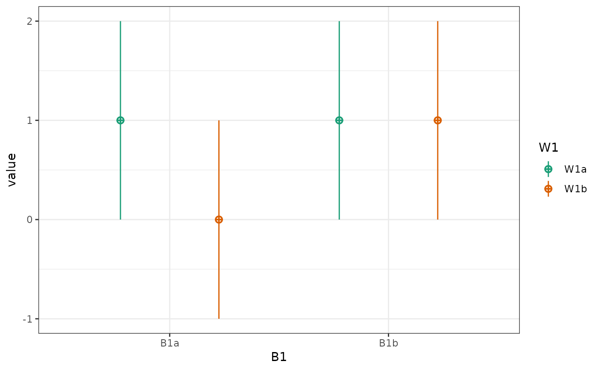

You need model coefficients to simulate multilevel data, and can get them from data simulated from parameters using sim_design() or rmulti().
get_coefs(data, formula = NULL, fun = stats::lm, ...)A dataset in long format
An lm formula (can be extracted from datasets created by sim_design)
the model function
Further arguments to the model function
a list of the model coefficients
# simulate some data
data <- sim_design(within = 2, between = 2,
mu = c(1, 0, 1, 1),
long = TRUE, empirical = TRUE)

# get coefs for the full factorial model
get_coefs(data)
#> (Intercept) W1 B1 W1:B1
#> 1.000000e+00 -1.000000e+00 1.776357e-15 1.000000e+00
# a reduced model
get_coefs(data, y ~ B1 + W1)
#> (Intercept) B1 W1
#> 0.75 0.50 -0.50
# specify a different model function
data$y <- norm2binom(data$y)
get_coefs(data, fun = glm, family = binomial)
#> (Intercept) W1 B1 W1:B1
#> 0.44731222 -1.65562342 -0.04184711 1.73970654